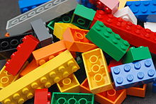
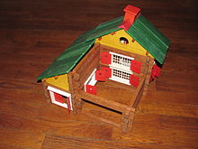

Construction set
From Wikipedia, the free encyclopedia

Lego bricks encourage learning through play"

Jeujura wooden construction set (Swiss chalet)
A
construction set is a set of standardized pieces that allow for the construction of a variety of different models. The pieces avoid the lead-time of manufacturing custom pieces, and of requiring special training or design time to construct complex systems. This makes them suitable for temporary structures, or for use as children's
toys.
Categories
Contruction sets can be categorized according to their connection method and geometry:
- Struts of variable length that are connected to any point along another strut, and at nodes.
- Tesseract connection points are initially flexible but can be made rigid with the addition of clips.
- Struts of fixed but multiple lengths that are connected by nodes are good for building space frames, and often have components that allow full rotational freedom.
- D8h (*228) nodes are used for K'Nex, Tinkertoys, Playskool Pipeworks, Cleversticks
- Ih (*532) nodes are used for Zometool
- Panels of varying sizes and shapes
- Panels of varying sizes and shapes are connected by pins or screws perpendicular to the panels, which are good for building linkages such as an Erector Set, Meccano, Merkur, Steel Tec, Lego Technic, Trix, FAC-System, and Überstix
- Panels of varying sizes and shapes with flexible panels or hinges between panels such as Tog'l, Jovo Click 'N Construct, Zaks, and Polydron
- Struts and panels
- Girder and Panel building sets
- Synestructics (does not make pentagonal structures)
- Geomag (components are magnetic)
- Building components with various methods of connection include:
- No connection: toy blocks, Anchor Stone Blocks, KEVA planks, Kapla, and Unit Bricks
- Studs: Rokenbok, Lego, Coco, Rasti, Tente, Mega Bloks, Fischertechnik, Playmobil, Loc Blocs, Cobi blocks, Betta Builda and Oxford, Kre-O
- Notches: Lincoln Logs, GIK, and Stickle bricks
- Sleeves: Capsela
- Spherical magnets
Pyschological benefits
Construction toy play is beneficial for building social skills and building trust in others because it acts as a collaborative task where individuals have to cooperate in order to finish the task — building an object out of Lego, for example. The effect was found in high school students.
For children specifically, children who complete models using toy building blocks have much better spatial ability than children who do not complete such models. Spatial ability also predicts completion of models.
Construction toy play is also beneficial for autistic children when both individual and group play with building blocks is incorporated. Autistic children who played with building blocks were motivated to initiate social contact with children their age, they were able to maintain and endure contact with those children, and autistic children were also able to surpass the barriers of being withdrawn and being highly structured.
Influence on architecture
Renowned architect Frank Lloyd Wright credited his childhood building blocks designed by Friedrich Fröbel as a major influence, and his son John Lloyd Wright created the widely known Lincoln Logs building set. In addition to teaching architectural concepts such as modularity and load-bearing construction, many architects credit construction set play as influencing their later design.
See also